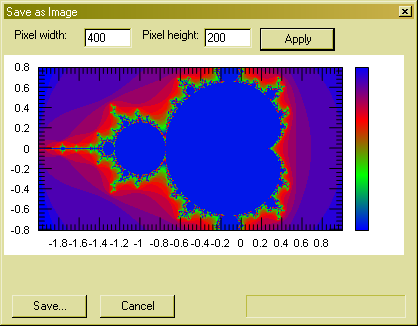

Convert a graph to a bitmap image

In this window you can convert a graph to a bitmap image and save it in a file.
In the two textboxes at the top you can enter the pixel width and height of the desired image.
Then you press the Apply button and the image is created. Next you press the Save... button and enter a filename to store the image in a file. Depending on the filename extension your image is stored as a gif, jpeg, tiff, bmp, png or emf file.